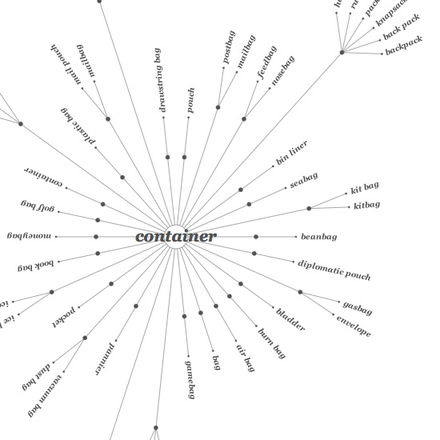

Description
WordNet is a dictionary of nouns, verbs, adverbs, adjectives, and their lexical relations: definition, different interpretations, category, and examples. Wordnet knows that black is the opposite of white, that birds are animals.
This library is part of the PlotDevice Linguistics library. If you need more linguistical power we recommend trying out that library.
Download
| wordnet.zip (11.2MB) Last updated for PlotDevice 1.9.2 |
How to get the library up and running
Put the wordnet library folder in the same folder as your script so PlotDevice can
find the library. You can also put it in ~/Library/Application Support/PlotDevice/ so
all scripts can find it.
wordnet = ximport("wordnet")
Documentation
WordNet describes semantic relations between synonym sets.
The noun_gloss() command returns the dictionary description of a word:
print wordnet.noun_gloss("book") >>> a written work or composition that has been published (printed on pages >>> bound together); "I am reading a good book on economics"
A word can have multiple senses, for example ‘tree’ can mean a tree in a forest but also a
tree diagram, or a person named Sir Herbert Beerbohm Tree. Sense indices start from 0.
print wordnet.noun_senses("tree") >>> [['tree'], ['tree', 'tree diagram'], ['Tree', 'Sir Beerbohm Tree']]
print wordnet.noun_gloss("tree", sense=1) >>> a figure that branches from a single root; "genealogical tree"
The noun_lexname() command returns a categorization for the given word:
print wordnet.noun_lexname("book") >>> communication
The noun_hyponym() command returns examples of the given word:
print wordnet.noun_hyponym("vehicle") >>> [['bumper car', 'Dodgem'], ['craft'], ['military vehicle'], ['rocket', >>> 'projectile'], ['skibob'], ['sled', 'sledge', 'sleigh'], ['steamroller', >>> 'road roller'], ['wheeled vehicle']]
print wordnet.noun_hyponym("tree", sense=1) >>> [['cladogram'], ['stemma']]
The noun_hypernym() command returns abstractions of the given word:
print wordnet.noun_hypernym("earth") print wordnet.noun_hypernym("earth", sense=1) >>> [['terrestrial planet']] >>> [['material', 'stuff']]
You can also execute a deep query with noun_hypernyms() and noun_hyponyms(). Notice how returned values become more and more abstract:
print wordnet.noun_hypernyms("vehicle", sense=0) >>> [['vehicle'], ['conveyance', 'transport'], >>> ['instrumentality', 'instrumentation'], >>> ['artifact', 'artefact'], ['whole', 'unit'], >>> ['object', 'physical object'], >>> ['physical entity'], ['entity']]
The noun_holonym() command returns components of the given word:
print wordnet.noun_holonym("computer") >>> [['busbar', 'bus'], ['cathode-ray tube', 'CRT'], >>> ['central processing unit', 'CPU', 'C.P.U.', 'central processor', >>> 'processor', 'mainframe'] ...
The noun_meronym() command returns the collection in which the given word can be found:
print wordnet.noun_meronym("tree") >>> [['forest', 'wood', 'woods']]
The noun_antonym() returns the semantic opposite of the word:
print wordnet.noun_antonym("black") >>> [['white', 'whiteness']]
Find out what two words have in common:
print wordnet.noun_meet("cat", "dog", sense1=0, sense2=0) >>> [['carnivore']]
The noun_absurd_gloss() returns an absurd description for the word:
print wordnet.noun_absurd_gloss("typography") >>> a business deal on a trivial scale
The return value of a WordNet command is usually a list containing other lists of related words. You can use the wordnet.flatten() command to flatten the list:
print wordnet.flatten(wordnet.noun_senses("tree")) >>> ['tree', 'tree', 'tree diagram', 'Tree', 'Sir Herbert Beerbohm Tree']
If you want a list of all nouns/verbs/adjectives/adverbs there’s the wordnet.all_nouns(), wordnet.all_verbs() ... commands:
print len(wordnet.all_nouns()) >>> 117096
All of the commands shown here for nouns are also available for verbs, adjectives and adverbs, verb_hypernyms(’run’), djective_gloss(’beautiful’) etc. are valid commands.
Example
The PlotDevice WordNet library has a small gizmo bundled in called explode (you won’t find it in the Linguistics library however). You can use it to quickly visualise WordNet:
wordnet = ximport("wordnet") from wordnet import explode font("Georgia-BoldItalic", 10) fill(0.3) q = "container" explode.draw(q, wordnet.noun_hyponyms(q), 300, 300, max=30)
